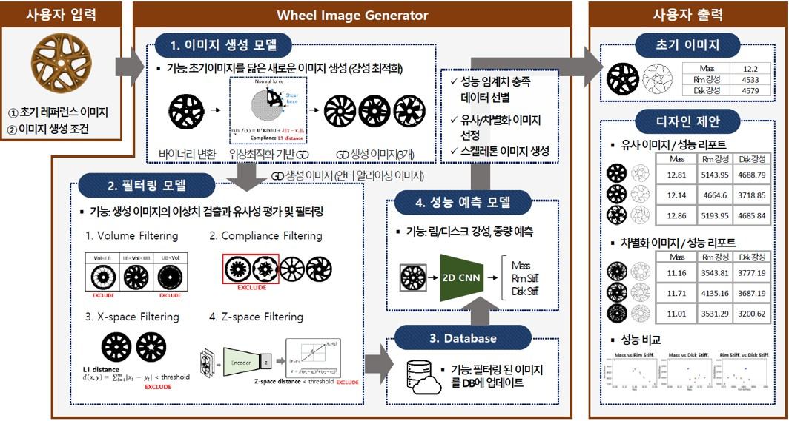

로드휠의 형상 제시를 위한 디자인 생성 가이드라인과 AI 기반 분류 기법 개발
Generative Design Guidelines and AI-Based Classification for Automotive Road Wheel Shapes
Hyundai Motor Group · Jul. 2021 – Jul. 2022

Overview
로드휠 디자인 프로세스는 디자인팀의 스케치/렌더링과 설계·해석팀의 3D CAD/CAE 사이를 반복하며 시간이 오래 걸린다. 본 과제는 AI 기반 Generative Design 기술로 이 프로세스를 변환하여, (i) 디자인팀에 유형별 다양한 휠 스케치를 제안하고, (ii) 설계·해석팀에 3D 모델링/CAE 없이 스케치 기반 성능 예측·개선안 자동 탐색 도구를 개발한다.
My Role
- 역할: 참여연구원(KAIST 석사과정)
- 2D 휠 디스크 스케치 생성 모델(GAN/Convolutional Autoencoder) 학습
- Volume / Compliance / X-space / Z-space 4종 필터링 모델 설계
- 2D 스케치 → 강성·중량 예측을 위한 surrogate CNN 모델 구축
- 웹 기반 GUI(Wheel Image Generator) 시연 및 매뉴얼 작성
Methodology
단계적 프레임워크로 구성. (1) 이미지 생성 모델: 사용자 입력(초기 스케치, 생성 조건)을 받아 GAN 기반으로 다양한 휠 스케치 후보를 생성.(2) 필터링 모델: Volume / Compliance / X-space / Z-space 기준으로 디자인 후보를 정리해 DB화.(3) 성능 예측 모델: 스케치 이미지를 입력으로 받아 림/디스크 강성을 즉시 예측하는 CNN surrogate.(4) 사용자 출력: 초기 이미지 대비 성능이 향상된 스케치 대안과 비교 시각화 제공.
Results / Key Outcomes
- 2019–2022 연속 과제로 발전, 2022년에는 GUI 기반 AI SW로 구현
- 3D 모델링/CAE 해석 없이 스케치만으로 강성·중량 예측 가능
- 스케치 수정안 자동 탐색으로 디자인-해석 반복 횟수 감소
- AI Korea 2022 발표 자료로 외부 시연 진행